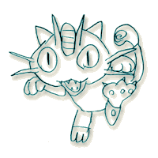
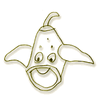
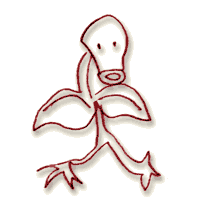
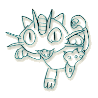

|
Ga.ant
Baba` "0kima|n777
|
|
{ym
cidyr ;e tovk ga.antu y|rp gu d0nek` Tygdympyr 246i
ci,y|ru5 Tygdympyr 316i|n
;e #ovnovar 66in1
Mamas g\use ;e yrp ink Lipanan er` nor darovan a-;iv ga.ant
baban novernyr gu pyrer iryn yv ir zarmignyrovn Tygdympyr 316i
ci,yru1 Pa3x mynk or hos /nyr ynk ¥hos` a3sinkn Los
Anjylus» yv ,r]abadova/ ynk amyrigaxi traxinyrow yv
ungyrnyrow5 [ynk grnar hampyryl min[yv 316u
yv g\a.a[ynk5 gu ba.adink or mivsnyrovn nman mynk al Tygdympyr
256i
a-dovn panank myr novernyru1
Hima
[q0sink ga.ant baba3in iragan gam o[ iragan ullalovn masin5
kani or ,ad part harx e yv ys or 8
darygan ym5 ty- [ym grxa/ ampo.]ov;yamp lov/yl za3n1 )rinag`
in[be|s g\ulla35 or ga.ant baban grna3 ;e4 Tygdympyr 246i5
;e4 Tygdympyr 316i
ci,yru cal5 martox kma3knyrovn yn;argovylow7 gam` in[be|s
grna3 myr dovnu mdnyl y;e povqyrig [ovnink1 Mamas orkan al
hamozyl 'or2e ;e bad,camen gu mdne5 ;e bad,camin tov-u pax
bedk e 2cynk5 ;e kani mu biskovi yv ki[ mu ga; 2cynk` lav
g\ulla3` ys sgsa/ ym gasga/il ;e ga.ant baban iragan e1 Cry;e
wsdah grnam usyl or mamas e novernyru cno.u5 'a;;o.u yv /a-in
dagu tno.u1 Pavagan 'asdyr al ovnim5 bedk e usyl5oronk
darinyrov un;axkin havakovyr yn 3i,o.ov;yans baharanin me]7
0rinag` ga.ant baba3in pyra/ novernyru 3ajaq myr ovnyxa/
noveri ;ov.;ow 'a;;ova/ g\ullan7 gam novers ji4,t a3n qanov;en
cnova/ g\ulla35 ovr mamas 3ajaq g\yr;a31
Pa3x
[ym cidyr in[o|v` me]s ov= mu ga35 or g\ovze or havadam ga.ant
baba3in1 Mamas al5 'oqanag 3sdagaxnylov qntiru5 mi,d gu
qovsa'i ov..agi badasqanyle harxovmnyrovs yv g\use ;e la4v pan
e havadalu5 ;e mi4,d bedk e havadal ga.ant baba3in5 ;e havadal
3ovsal gu n,anage5 yv asang anoro, panyr5 oronk ;eyv ,ad [yn
0cnyr in/i yv 0tin me] gaqova/ gu bahyn zis qovl [.]igi mu bes
or mov;in me] bade bad gu zarnovi5 pa3x irav al` 3o3s mu gu
tnyn me]s1
#o3s
mu` or ga.ant baban iragan e yv or ovza/s grnam ovnynal a3s
ga.antin1
Isg
i|n[ g\ovzym777
Ha3gin
ovza|/u777
An
er5 or polor5 cry;e polor ir darygixnyru g\ovzein` :omasu yv "i;uru
5 Calen yv Nigolu5 K0zm0su yv :a3luru5 Wahacn ov Narygu5
Es;yran yv E3min5 Alikn ov Talaru1 Amyrigaxi5 [inaxi5 ha35
barsig5 ja'onxi5 myksikaxi7 polo4ru5 polo4ru no3n panu
g\ovzein1
")KIMA~N
KA~R:1 |

|
{arzardu
ovner yv ,a~d ovraq er5 orowhydyv {arzardu amynen 3arci5
'a3lovn5120
ged ar=o. ov hima cry;e ancdanyli kar;n er1 Amen dari mia3n
[ors had gu dbover ange yv hy-adysilen g\usein or ,a4d z0ravor
er1
Elek;rabazn
al ovner1 Elek;rabazu clqovn wra3 an;enanyr ovner5 oronx
,norhiv grnar ,ad hy-ovnyren 2a3nyr lsyl yv cidnal y;e ovri,
'0kiman mu wran bidi 3ar2ager7771 Nayv grnar ga3/agnahar unyl
timaxinu7771 Elek;rabazen mia3n 20
had gar ,ovgan7771 |

|
Bidriln
al ovner yv gu sirer5 kani or ,a4d ov=ow er yv o-igin wra3
asy. mu ovner7 y;e ovri, '0kiman mu 3ar2ager wran` ink grnar
a3t ;ovnavor asy.ow sbannyl za3n1
8Ty-
i|n[ g\ovzys95 6 mdken gu lser mama3in harxovmu1 Hima` yrgara/
ango.inin wra35 a-asda.u gu tider ov g\yrazer 3a]ort kar;in1
Cider5 or ki[ mu qyn;ov;ivn er "0kimani ampo.]
badmov;ivnu1
Pa3x777
in[be|s waz anxner a3t hajo3ken5 yrp "0kimani nor baharan
mu gu panar yv anhampyr g\ovzer cidnal ;e o|r kar;yru
bahovudyr ein me]u` Magnu;0|nu5 Winas0|ru5 Ma[a|m'u ;e
Ge3ridosu777
Ji,t
e` haziv kani mu wa3rgyan gu dyver a3t hajo3ku5 pa3x a3nka\n
z0ravor er5 cry;e` angrgnyli777
#ydo3`
"0kimanow ovri, panyr al garyli er unyl` ungyro] hyd
qa.al yv kar;yrovn ov=u pa.tadyl5 covmarovm yv hanovm unyl5
dy.ygov;ivnnyru gartal7771
Hu|
ga.ant baba5ga.ant mama5 o\w or ys` haji\s5 HAJI~S` "0kiman
py\r in/i ga.antin1 |

|
No3ympyr
306in
maman :re3dur J06en ;ov.;e badovhannyrov ydyv bahovuda/
,okolanyru cnyx1
Tygdympyr
16in inkn
ov ko3ryru sgsan ;iv 1
badovhanu panal yv zancaga2yv ,okolan ovdyl1 <a4d hamow er
yv ga.antin m0dynalovn a-a]in n,ann er dovnen nyrs1
Tygdympyr
26in
gyran yrgrort badovhanin ydyv bahovuda/ ga.ant baba3in
,okola3e temku1
Tygdympyr
36in
[timaxan yv gyran Tygdympyr 46i
yv Tygdympyr 56i
,okolanyru1 O4[ mia3n ,a4d hamow ein anonk5a3l iryn a3nbes gu
;over ;e arac ovdylow 0ryrn al arac g\anxnein777
Ame4n
go.m ga.ant gu povrer arten1 Amen go.m bsb.ovn lo3syr ga3in5
/a-yrovn ov dovnyrovn wra35 qanov;nyrovn me]7 'a3lovn5
co3nzco3n zartyr5 ?novnti yrcyr1 Sovd ga.ant babanyr ¥maman
g\user or adonk iragan [ein5 mia3n tram ,ahylov gu /a-a3ein»
pazga;o-nyrov me] ungo.maxa/5 bzdig d.ox yv a.]ignyrov hyd gu
ngarovein1 M;nolordin me] hajyli5 qantawa- pan mu gar1
Tygdympyr
206in
/a-u cnyxin1 In[bes amen dari` maman ir sira/ y.anagnyrov
kase;u trav yv ampo.] undaniku masnagxyxav /a- zartarylov
a,qadankin1 Ha3gin sirdu gu dro'er7 [ors6hinc 0r mnaxa/ er
jagadacragan 0rovan7 in[be|s bidi hampyrer7 in[be|s bidi
timanar1 Haba y;e ga.ant baba3in sahnagu 0tin me] gynar`
[3a-a]anar777gam y.nignyru cor/atovli timein yv usein 8a3s0r
al [y4nk a,qadir97 isg y;e mama3in 3ama-ov;ivnu p-ner yv "0kimanin
tem wji-nyr ar2ager777 |
|
Tygdympyr
246in
Glende3l caxin yv Avacyan nbaradovnen [ir ov [ami[5 [orxa/
qa.o. yv ungo3z cnyxin5 pyrin1 Sy.anin wra3 garmir /a/gox mu
trin5 momyru tovrs hanyxin5 astin6antin zartyr zydy.yxin yv
aha` badrasd ein1 Yrp g\ovzer` ;o. car777 mia43n ;o. car777
Amen
dari g\user ;e ink ar;ovn bidi mnar5 orbeszi dysner ;e ga.ant
baban ovrge| gu mdner5 pa3x maman gdrovg 8o4[9 mu5 gam
8[\ullar9 g\user ov gu badja-apaner ;e ga.ant baban [er car5
y;e cidnar or bzdignyru ty- ar;ovn ein1
A3s
dari al 'or2yx7
Ð
Ma4m5 ys ar;ovn bidi mnam5 or777
Ð
O4[7 [\ullar7 [i car y;e777
Jarahad
ango.in cnax1
Orka4n
t=ovar y.av kovni anxnilu777 |

|
Yrazin
me] Wahacnynx er7 miasin "0kiman gu qa.a3in7 Wahacnu bidi
3a.;er5 pa3x 3ydo3 K0zm0su ygav yv gan[yx zink1 crbanen kani
mu 8;re3nur9 yv 8enurji9 hanyx yv 'oqanagyl g\ovzer5 pa3x
Misiz Soli,u m0dyxav irynx yv yrgovku ki[ mnar` waqyrnen
dagyrnin bidi unein5 orowhydyv arcilova/ er '0kiman kar;yru
tbrox danil yv Misiz Soli,u ,a4d qisd er` ampo.] zp0sankin
nsdaranin wra3 nsdil gov dar1 #ydo3` ovrge ov|r` :omasin dovnn
ein yv :omasu ir "0kimani albomu gu xovxner gor iryn5
yrp a[kyrovn wra3 pan mu zcax1 Paxav1 A-dov er1 Tygdympyr
256n er1
Ara4c` tovrs` hivranox1
?a-u
hon er1 ?a-u no3nn er5 pa3x /a-in dag gar/ys yrginken inga/
co3nzco3n5 my/ ov 'okr5/avalovn gam paragig novernyr ga3in 1
I4n[ a.ovor er dysaranu7 sirdu tovrs bidi xadger ovraqov;ynen1
{grxav5 [ovzyx minagu abril a3s bahu1 Yd wazyx synyag5 ko3ryru
ar;nxovx5 arac5 hyvasba-` 8Nana4r5 Lo4r5 ygy4r e5 ygy4r e7779
Amen
darovan bes yryku kna;a;aq havakovyxan /a-in ,ovr] yv sgsan
naq znnyl kar;yru7 8 asiga memeen e` Ha3gin95 8asiga ga.ant
baba3en e` Lorin95 8asiga mama3en5baba3en e` Nanarin9777
anbadmyli zcaxovm er abra/u1 Sirdu5 or arten ancam mu tovrs
xadga/ er5 noren ov noren gu xadger7 ki[ mnar` bidi
qyn;ynar777 ahacin nover ovner` qo,or5 glor5 ka-agovsi777
arty0|k777
Sgsav
ajabarankow bad-yl noveri ;ov.;yru1 Asor me] baske;i cntag mu
gar7 0~ i4n[ la~v5 pa3x mi|vsu 777 mivsin me] cidagan 'or2yrov
havaka/o3 mu gar7 0~ ,a4d ovza/ er 'or2yr unyl5 pa3x mi|vsu777
mivsin me] Ar;urin cirkyren ga3in7 hinc had7 0~ i4n[ la4v`
bidi gartar5 pa3x mi|vsu777 mivsin me]5 mivsin me] 777 a.ovor
,abig mu gar1 Yv a3ska4n1
Sirdu
gu jmlover1 Sirdu5 or kani mu ancam tovrs xadga/ er5 hima
nyrsn er yv gar/ys gu my/nar5 g\ajer5 g\ov-er5 ampo.] marminu
gu lyxner1 Sirdu lal g\ovzer7 in[be|s g\ullar5 a3t in[be|s
g\ullar5 or ga.ant baban i4r ovza/u [er pyra/1 Polor mivs
qa.aliknyru5 cirkyru5 ,abigu5 anhrabo3r5 angaryvor gu ;ovein
iryn yv gar/ys ampo.] a,qarhu 'ovl yga/ er clqovn7 [er al lsyr
ko3ryrovn 8ama~95 8na3e~96nyru yv a[kyru /a-in 3a-a/` gu
'or2er arxovnknyru zsbyl5 yrp777 3angar/777
Yra|z
er dysa/u ;e iragan777
Iryn
a3nbes ;ovyxav ;e 'a3lovn pan mu ,ar=yxav gana[ jiv.yrovn
qorku7 gar/ys megu a[k g\uner iryn5 3ydo3 gu 'aqer7 noren
na3yxav7 a3s ancam a3l angivne mu5 a3l 'a3lovn pan mu iryn
na3yxav ov gar/ys =bdax1 Ha3gu a[kyru ,'yx5 ga;il mu arxovnk
gar` ;yvowu [orxovx5 noren na3yxav1 A3s ancam` /a-in gadarin5
/a-in 2aq go.mu5 /a-in a] go.mu5 ame4n jiv.i qorken iryn gu
na3ein Mi[ovn5 "ika[ovn5 {armeleonu5 Nidorinon5
Dragona3;u yv Dragone3ru777 Klife3rin pari6pari gu =bder777
isg Ovar;ur;ulu ancamovan mu hamar ]ovren tovrs ygyr er
arac6arac yv agan]nyru gu [orxner777 |

|
Siryli4
ungyrnyr5
Mi4
gar/ek or cor/s tivraxav1 Ga.ant baba3in isgagan inknov;ivnu
cidnalov jicyrs ancam mu yvs badi mu gu hantibin1 Ys mama3is
tidmamp [ei usa/ ;e i|n[ g\ovzym ga.ant baba3en5 orowhydyv
g\ovzei wyr]nagan0ren 'asdyl anor co3ov;ivnu gam [co3ov;ivnu1
Pa3x5 hima or "0kiman kar;yrs sdaxyr ym ov tryr albomis
me]5 gu mda/ym` a3t in[be|s g\ulla35 or sdaxa3 ca.dn0ren
ovza/s7 ov g\yzragaxnym5 or ga4m irabes bedk e havadal ga.ant
baba3in yv gam "0kimannyru a3nka4n ov= ovnin5 or mamas al
a-yr yn irynx ov=i ta,din me]777
Ga.ant
baban` mi4,d1 "0kimanu` mi4,d1 |

|
|